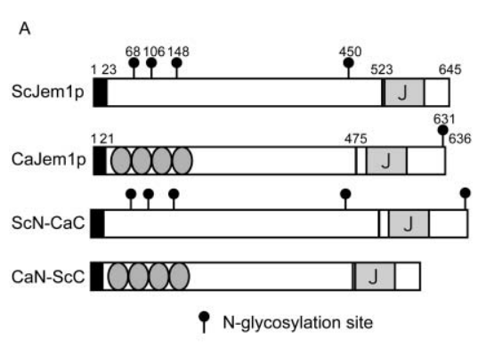

ER-lumenal J-domain containing co-chaperone (DnaJ/Hsp40 family) in Candida albicans. CaJem1p is the ortholog of S. cerevisiae Jem1p and localizes to the endoplasmic reticulum. Functions together with BiP/Kar2p (ER Hsp70) in protein folding and quality control in the ER lumen. When expressed in S. cerevisiae, CaJem1p suppresses the temperature-sensitive growth and ER quality control defects of the jem1-delta scj1-delta mutant, confirming functional conservation (PMID:18754794). CaJem1p can also suppress the karyogamy defect of the jem1-delta mutant when overexpressed, though less efficiently than ScJem1p due to differences in the N-terminal domain that mediates interaction with Nep98p (PMID:18754794). Contains a DnaJ/J-domain (Pfam PF00226) and a TPR-like domain. Has a signal peptide for ER targeting.
| GO Term | Evidence | Action | Reason |
|---|---|---|---|
|
GO:0051087
protein-folding chaperone binding
|
IBA
GO_REF:0000033 |
ACCEPT |
Summary: IBA annotation for binding to chaperone proteins. JEM1 is a J-domain co-chaperone that binds to and stimulates the ATPase activity of the ER Hsp70 BiP/Kar2p.
Reason: JEM1/Jem1p functions as a co-chaperone partner for the ER Hsp70 BiP/Kar2p. PMID:18754794 states that Jem1p "functions together with another J protein, Scj1p, in protein folding and quality control in the ER as a partner for the ER Hsp70 (BiP/Kar2p)." Binding to a protein-folding chaperone (BiP) is a core function.
Supporting Evidence:
PMID:18754794
Jem1p is required for nuclear fusion during mating (karyogamy) and functions together with another J protein, Scj1p, in protein folding and quality control in the ER as a partner for the ER Hsp70 (BiP/Kar2p).
file:CANAL/JEM1/JEM1-deep-research-falcon.md
Biochemical pull-down evidence shows CaJem1p binds BiP through its J-domain, and mutation of the HPD motif residue H517Q abolishes BiP binding and abolishes functional complementation of ER proteostasis phenotypes.
|
|
GO:0005783
endoplasmic reticulum
|
IBA
GO_REF:0000033 |
ACCEPT |
Summary: IBA annotation for ER localization, supported by phylogenetic inference. UniProt indicates ER localization. The protein has a signal peptide.
Reason: ER localization is well established for JEM1 family members. PMID:18754794 states "CaJem1p localized in the ER when expressed in S. cerevisiae." UniProt also annotates ER localization. The protein has a predicted signal peptide for ER targeting.
Supporting Evidence:
PMID:18754794
CaJem1p localized in the ER when expressed in S
file:CANAL/JEM1/JEM1-deep-research-falcon.md
CaJem1p-3HA expressed in S. cerevisiae exhibited perinuclear/ER localization and co-localized with BiP, supporting ER residency consistent with a luminal co-chaperone role.
|
|
GO:0034975
protein folding in endoplasmic reticulum
|
IBA
GO_REF:0000033 |
ACCEPT |
Summary: IBA annotation for protein folding in the ER. JEM1 functions with BiP in ER protein quality control.
Reason: Protein folding in the ER is a core function of JEM1. PMID:18754794 demonstrates that "expression of CaJem1p from a single-copy plasmid suppressed the temperature sensitive growth and the ER quality control defect of the jem1-delta scj1-delta mutant." This directly confirms CaJem1p functions in ER protein folding and quality control.
Supporting Evidence:
PMID:18754794
expression of CaJem1p from a single-copy plasmid suppressed the temperature sensitive growth and the ER quality control defect of the jem1Deltascj1Delta mutant, indicating that CaJem1p is functional in S. cerevisiae.
file:CANAL/JEM1/JEM1-deep-research-falcon.md
In a S. cerevisiae background lacking both JEM1 and SCJ1, expression of CaJem1p from a single-copy plasmid suppressed temperature-sensitive growth and ER quality-control defects, and the HPD mutant failed to do so.
|
|
GO:0051787
misfolded protein binding
|
IBA
GO_REF:0000033 |
ACCEPT |
Summary: IBA annotation for misfolded protein binding. JEM1 is involved in ER protein quality control, which involves recognition of misfolded proteins.
Reason: JEM1/Jem1p is involved in ER protein quality control alongside Scj1p and BiP/Kar2p. Quality control involves recognition and binding of misfolded proteins in the ER lumen. The IBA annotation is consistent with this role and is at an appropriate level of specificity for a J-domain co-chaperone involved in quality control.
|
|
GO:0005783
endoplasmic reticulum
|
IEA
GO_REF:0000044 |
ACCEPT |
Summary: IEA annotation from UniProt subcellular location mapping. Consistent with the IBA annotation and experimental evidence.
Reason: Duplicates the IBA annotation. ER localization is experimentally confirmed for CaJem1p (PMID:18754794).
|
|
GO:0000742
karyogamy involved in conjugation with cellular fusion
|
IGI
PMID:18754794 Identification and characterization of a Jem1p ortholog of C... |
KEEP AS NON CORE |
Summary: IGI annotation for karyogamy (nuclear fusion during mating). Based on genetic interaction with S. cerevisiae jem1 mutant. CaJem1p can suppress the karyogamy defect when overexpressed.
Reason: Karyogamy function is established for ScJem1p, and CaJem1p can partially complement this when overexpressed. However, this is not a core molecular function of the protein -- it is a downstream biological process mediated by its co-chaperone activity. Furthermore, PMID:18754794 shows the karyogamy function is less efficient for CaJem1p than ScJem1p due to weaker interaction with Nep98p. Mark as non-core.
Supporting Evidence:
PMID:18754794
CaJem1p suppressed the karyogamy defect of the jem1Deltamutant only when it was over-expressed from a multicopy plasmid.
|
|
GO:0005783
endoplasmic reticulum
|
ISS
PMID:18754794 Identification and characterization of a Jem1p ortholog of C... |
ACCEPT |
Summary: ISS annotation for ER localization by sequence similarity. Consistent with direct experimental evidence.
Reason: ER localization is directly demonstrated for CaJem1p in S. cerevisiae (PMID:18754794). This annotation is consistent with the IBA and IEA annotations.
|
|
GO:0005783
endoplasmic reticulum
|
IGI
PMID:18754794 Identification and characterization of a Jem1p ortholog of C... |
ACCEPT |
Summary: IGI annotation for ER localization based on genetic interaction data.
Reason: ER localization is confirmed by direct observation (PMID:18754794). Multiple evidence codes supporting the same correct localization is fine.
|
|
GO:0006457
protein folding
|
IGI
PMID:18754794 Identification and characterization of a Jem1p ortholog of C... |
ACCEPT |
Summary: IGI annotation for protein folding based on genetic interaction with S. cerevisiae jem1 and scj1 mutants.
Reason: Protein folding is a core function of JEM1. CaJem1p rescues the ER quality control defects of the jem1-delta scj1-delta mutant (PMID:18754794), directly demonstrating involvement in protein folding.
Supporting Evidence:
PMID:18754794
expression of CaJem1p from a single-copy plasmid suppressed the temperature sensitive growth and the ER quality control defect of the jem1Deltascj1Delta mutant
|
|
GO:0051082
unfolded protein binding
|
IGI
PMID:18754794 Identification and characterization of a Jem1p ortholog of C... |
MODIFY |
Summary: IGI annotation for unfolded protein binding. GO:0051082 is proposed for obsoletion. JEM1 is a J-domain co-chaperone that assists BiP in protein folding in the ER.
Reason: GO:0051082 is being obsoleted. JEM1 functions as a co-chaperone for BiP/Kar2p in the ER, assisting in protein folding and quality control. The appropriate replacement is GO:0044183 "protein folding chaperone" which captures the chaperone activity of JEM1 in assisting protein folding via the Hsp70 system. JEM1 does not merely bind unfolded proteins passively; it actively participates in the folding cycle by stimulating BiP ATPase activity through its J-domain.
Proposed replacements:
protein folding chaperone
Supporting Evidence:
PMID:18754794
Jem1p is required for nuclear fusion during mating (karyogamy) and functions together with another J protein, Scj1p, in protein folding and quality control in the ER as a partner for the ER Hsp70 (BiP/Kar2p).
|
|
GO:0051087
protein-folding chaperone binding
|
IGI
PMID:18754794 Identification and characterization of a Jem1p ortholog of C... |
ACCEPT |
Summary: IGI annotation for chaperone binding based on genetic interaction data. JEM1 binds to BiP/Kar2p as a co-chaperone.
Reason: Binding to the ER Hsp70 chaperone BiP/Kar2p is a core function of JEM1. The J-domain directly interacts with and stimulates the ATPase activity of BiP. This annotation is consistent with the IBA annotation.
|
The research report should be a detailed narrative explaining the function, biological processes, and localization of the gene product. Citations should be given for all claims.
You should prioritize authoritative reviews and primary scientific literature when conducting research. You can supplement
this with annotations you find in gene/protein databases, but these can be outdated or inaccurate.
We are specifically interested in the primary function of the gene - for enzymes, what reaction is catalyzed, and what is the substrate specificity? For transporters, what is the substrate? For structural proteins or adapters, what is the broader structural role? For signaling molecules, what is the role in the pathway.
We are interested in where in or outside the cell the gene product carries out its function.
We are also interested in the signaling or biochemical pathways in which the gene functions. We are less interested in broad pleiotropic effects, except where these elucidate the precise role.
Include evidence where possible. We are interested in both experimental evidence as well as inference from structure, evolution, or bioinformatic analysis. Precise studies should be prioritized over high-throughput, where available.
Candida albicans JEM1 (orf19.11074; UniProt A0A1D8PIB5) encodes Jem1p, an endoplasmic reticulum (ER)-localized Hsp40/DnaJ-family co-chaperone ("J-protein") that binds the ER Hsp70 BiP/Kar2 via its conserved J-domain HPD motif and supports ER proteostasis, including ER quality control and ER-associated degradation (ERAD). Direct experimental evidence for the C. albicans protein is primarily from heterologous functional and localization assays in Saccharomyces cerevisiae, where CaJem1p localizes to the ER (co-localizing with BiP), binds BiP in an HPD-dependent manner, suppresses CPY aggregation, and improves CPY degradation in ERAD-defective yeast backgrounds; its ability to support karyogamy/nuclear fusion is weaker than the S. cerevisiae ortholog and requires overexpression. (makio2008identificationandcharacterization pages 3-4, makio2008identificationandcharacterization pages 4-5)
Verified identity: The literature retrieved for fungal Jem1p explicitly maps Candida albicans CaJEM1 to ORF19.11074 and describes the encoded 636-aa CaJem1p as a homolog/ortholog of S. cerevisiae Jem1p, an ER J-domain co-chaperone. (makio2008identificationandcharacterization pages 3-4)
Notable ambiguity risk: “JEM1” can be used differently in other organisms, but the defining features here—fungal ER localization plus a C-terminal DnaJ/J-domain (HPD motif) and BiP interaction—match the UniProt target context provided (A0A1D8PIB5; C. albicans SC5314). (makio2008identificationandcharacterization pages 3-4)
J-proteins (Hsp40/DnaJ family) are co-chaperones that regulate Hsp70 activity. Their conserved J-domain (∼70 aa) contains the HPD motif that is required for stimulating Hsp70 ATP hydrolysis and productive client binding cycles. This mechanistic logic is central to interpreting Jem1p function as an ER luminal co-chaperone for BiP/Kar2. (vembar2010jdomaincochaperone pages 1-2, rollenhagen2020theroleof pages 3-5)
The ER must fold secretory and membrane proteins and triage terminally misfolded proteins. ERAD retrotranslocates misfolded ER proteins for ubiquitin–proteasome degradation, while the unfolded protein response (UPR) transcriptionally increases ER folding/quality-control capacity. In pathogenic fungi, ER proteostasis networks (UPR/ERAD/UPS) are broadly linked to stress adaptation and virulence-related traits (e.g., secretion capacity, morphology, growth under host stresses). (nevesdarocha2023insightsandperspectives pages 3-5)
Makio et al. describe CaJem1p as a 636-aa protein with an N-terminal signal peptide and C-terminal J-domain; the Candida N-terminus is predicted to contain TPR motifs, and sequence identity is higher in the C-terminal/J-domain region than in the N-terminus (≈40% vs ≈17% identity when compared to ScJem1p). (makio2008identificationandcharacterization pages 3-4)
A domain architecture schematic (signal sequence, predicted TPRs, J-domain) is shown in Makio et al. 2008 figures. (makio2008identificationandcharacterization media c33708d9)
CaJem1p-3HA expressed in S. cerevisiae exhibited perinuclear/ER localization and co-localized with BiP, supporting ER residency consistent with a luminal co-chaperone role. (makio2008identificationandcharacterization pages 3-4, makio2008identificationandcharacterization media c33708d9)
Biochemical pull-down evidence shows CaJem1p binds BiP through its J-domain, and mutation of the HPD motif residue H517Q abolishes BiP binding and abolishes functional complementation of ER proteostasis phenotypes. This HPD-dependence is a hallmark of functional J-protein:Hsp70 coupling. (makio2008identificationandcharacterization pages 3-4)
Direct functional evidence (via heterologous yeast assays): In a S. cerevisiae background lacking both JEM1 and SCJ1 (jem1Δ scj1Δ), expression of CaJem1p from a single-copy plasmid suppressed temperature-sensitive growth and ER quality-control defects, and the HPD mutant failed to do so—supporting a role for CaJem1p in ER proteostasis. (makio2008identificationandcharacterization pages 3-4)
ERAD-relevant assay (CPY*): The jem1Δ scj1Δ mutant shows CPY aggregation after heat shift; expressing ScJem1p or CaJem1p increases soluble CPY and increases the rate of CPY* degradation at 23°C, indicating suppression of an ERAD/quality-control defect. (makio2008identificationandcharacterization pages 4-5)
A figure region extracted from Makio et al. visually summarizes CPY aggregation reduction and CPY degradation improvement. (makio2008identificationandcharacterization media c33708d9)
Mechanistic interpretation (from yeast ER chaperone specificity): Work dissecting BiP interaction surfaces indicates BiP engages distinct ER Hsp40s with different functional outcomes—Sec63 for translocation and Jem1 for ERAD—supporting a model where Jem1p specializes in ERQC/ERAD substrate handling through BiP. (vembar2010jdomaincochaperone pages 1-2)
In S. cerevisiae, KAR8 is allelic to JEM1, and Jem1p is required for nuclear membrane fusion during mating, genetically linked to Kar2/BiP and Kar5; a nuclear envelope fusion “chaperone complex” was proposed including Kar2p, Kar5p, and Kar8/Jem1p. (brizzio1999geneticinteractionsbetweenkar7sec71kar8jem1kar5 pages 1-2)
For CaJem1p, karyogamy complementation in S. cerevisiae is weaker and dose-dependent: single-copy CaJem1p only partially rescues karyogamy, while multicopy expression restores near-wild-type levels. This implies the ER co-chaperone function is strongly conserved, whereas karyogamy-specific interactions are more species-tuned (likely via N-terminal determinants and specific binding partners such as Nep98p/Mps3p). (makio2008identificationandcharacterization pages 4-5, makio2008identificationandcharacterization pages 5-7)
In Makio et al. (2008), in a S. cerevisiae jem1Δ background:
* Vector control: Kar+ ~3.4%, diploid ~0.6%. (makio2008identificationandcharacterization pages 4-5)
* ScJem1p (single-copy): Kar+ ~96%, diploid 27–29%. (makio2008identificationandcharacterization pages 4-5)
* CaJem1p (single-copy): Kar+ 33 ± 10%, diploid 4.8 ± 2.0%. (makio2008identificationandcharacterization pages 4-5)
* CaJem1p (multicopy): Kar+ 96.4 ± 0.8%, diploid 30 ± 9%. (makio2008identificationandcharacterization pages 4-5)
Chimeras further support N-terminal determinants of karyogamy function (e.g., ScN–CaC single-copy Kar+ 93.9 ± 3.5 vs CaN–ScC single-copy Kar+ 12 ± 6). (makio2008identificationandcharacterization pages 4-5)
Although these are S. cerevisiae data, they support the general functional placement of Jem1/Scj1-family ER J-proteins in ER folding capacity:
* ER stress induction (WT): KAR2 mRNA ~4.7-fold and ERJ5 mRNA ~2.4-fold after tunicamycin/DTT. (fama2007thesaccharomycescerevisiae pages 8-9)
* Constitutive KAR2 induction: Δscj1 ~2.5-fold, Δjem1 ~1.7-fold, Δerj5 ~1.6-fold relative to WT. (fama2007thesaccharomycescerevisiae pages 8-9)
These values indicate that loss of ER J-proteins partially activates UPR, consistent with reduced ER folding capacity. (fama2007thesaccharomycescerevisiae pages 8-9)
A 2023 review emphasizes that fungal virulence is strongly influenced by proteostasis circuits, including ER stress sensing (Ire1/Hac1), BiP regulation of Ire1, and ERAD/UPS clearance of misfolded ER proteins; Candida albicans hac1/hacA mutants are reported to show increased sensitivity to ER stress and aberrant morphology/growth. While Jem1 is not directly discussed, this review reinforces that ER chaperone systems (BiP-centered networks that include J-proteins) are central to stress adaptation relevant to infection. (nevesdarocha2023insightsandperspectives pages 3-5)
Publication: Neves-da-Rocha et al., 2023-07 (Microorganisms). URL: https://doi.org/10.3390/microorganisms11081878 (nevesdarocha2023insightsandperspectives pages 3-5)
A 2024 review of eukaryotic secretion discusses ER Hsp70 (Kar2/BiP) cooperation with Sec63 and nucleotide-exchange factors (Lhs1/Sil1) and links Sil1 deletion to ERAD defects in yeast. This adds mechanistic context for how ER co-chaperones couple translocation, folding, and ERAD, but it does not provide new Candida JEM1 data. (nataraj2024areviewon pages 2-3)
Publication: Nataraj & Sudhakaran, 2024-04. URL: https://doi.org/10.55251/jmbfs.10555 (nataraj2024areviewon pages 2-3)
A relevant primary study was detected by the search layer but could not be retrieved in full text in this run: Doss et al., 2023-08 (PeerJ): “Characterization of endoplasmic reticulum-associated degradation in the human fungal pathogen Candida albicans”. This suggests active 2023 primary research directly on Candida ERAD, potentially relevant to Jem1-dependent functions, but it could not be analyzed with the available tools. (paper_search unobtainable list)
Jem1p is not an enzyme catalyzing a small-molecule reaction; its primary function is regulatory/assistive: it is an ER Hsp40/J-protein that binds BiP/Kar2 and supports client protein folding and quality control (including ERAD substrate handling). This is directly supported by HPD-dependent BiP binding and ERQC/ERAD phenotypic rescue assays. (makio2008identificationandcharacterization pages 3-4, makio2008identificationandcharacterization pages 4-5)
A C. albicans pathogenesis-oriented review argues that ER folding and secretory pathway capacity underpins virulence-associated outputs (cell wall integrity, hyphal growth, biofilm formation), and notes that Jem1 is the most extensively investigated ER J-protein in C. albicans and interacts with ER Hsp70 to assist folding. While this does not establish Jem1 as a direct virulence determinant, it places Jem1 functionally within processes required to support secretion-dependent pathogenic traits. (rollenhagen2020theroleof pages 3-5)
Key visual evidence from Makio et al. (2008) includes a domain architecture schematic for CaJem1p vs ScJem1p and immunofluorescence co-localization of CaJem1p-3HA with BiP, plus CPY* aggregation/degradation (ERAD) rescue. (makio2008identificationandcharacterization media c33708d9, makio2008identificationandcharacterization media a427c1de, makio2008identificationandcharacterization media fadf573f)
Gene/product: Candida albicans JEM1 (orf19.11074) → Jem1p (ER Hsp40/DnaJ co-chaperone). (makio2008identificationandcharacterization pages 3-4)
Subcellular localization: ER (perinuclear/ER staining overlapping BiP). (makio2008identificationandcharacterization pages 3-4, makio2008identificationandcharacterization media c33708d9)
Molecular function: J-domain co-chaperone that binds/stimulates ER Hsp70 BiP/Kar2 via HPD motif; required for co-chaperone function. (makio2008identificationandcharacterization pages 3-4)
Biological processes/pathways: ER protein folding/quality control; supports ERAD handling of misfolded luminal clients (CPY* model substrate in yeast); conditionally contributes to karyogamy/nuclear fusion pathways by orthology and partial functional complementation. (makio2008identificationandcharacterization pages 4-5, brizzio1999geneticinteractionsbetweenkar7sec71kar8jem1kar5 pages 1-2)
Key partners (supported): BiP/Kar2 (direct). (makio2008identificationandcharacterization pages 3-4)
Karyogamy-associated partners (orthology-supported): Kar2, Kar5, and Nep98p/Mps3p-like components inferred from S. cerevisiae genetic/interaction data; CaJem1p shows weaker Nep98p interaction unless overexpressed. (brizzio1999geneticinteractionsbetweenkar7sec71kar8jem1kar5 pages 1-2, makio2008identificationandcharacterization pages 7-9)
| Feature | Evidence summary | Organism context (C. albicans direct vs S. cerevisiae orthology/inference) | Key citation IDs | Publication (first author year) + URL |
|---|---|---|---|---|
| Identity | CaJEM1 was identified as the Candida albicans ortholog of S. cerevisiae JEM1; the paper maps it to ORF19.11074 and characterizes the encoded 636-aa Jem1p as a fungal ER J-protein. | Direct for C. albicans, with orthology validated experimentally in S. cerevisiae complementation assays. | (makio2008identificationandcharacterization pages 3-4, makio2008identificationandcharacterization pages 1-3) | Makio 2008 — https://doi.org/10.1111/j.1365-2443.2008.01223.x |
| Domain architecture | CaJem1p contains an N-terminal signal peptide and a C-terminal J domain; predicted N-terminal TPR motifs were reported for the Candida protein, and the conserved HPD motif in the J domain is functionally critical. Figure 1A visualizes signal sequence/TPR/J-domain organization. | Direct for C. albicans. | (makio2008identificationandcharacterization pages 3-4, makio2008identificationandcharacterization media c33708d9) | Makio 2008 — https://doi.org/10.1111/j.1365-2443.2008.01223.x |
| Localization | Immunofluorescence of CaJem1p-3HA expressed in yeast showed perinuclear/ER staining overlapping BiP, supporting ER lumen/ER-associated localization. Figure 1C provides visual support. | Direct experimental evidence for CaJem1p localization, assayed in heterologous yeast system. | (makio2008identificationandcharacterization pages 3-4, makio2008identificationandcharacterization pages 7-9, makio2008identificationandcharacterization media c33708d9) | Makio 2008 — https://doi.org/10.1111/j.1365-2443.2008.01223.x |
| Primary molecular function | CaJem1p behaves as an Hsp40/DnaJ co-chaperone for ER Hsp70 BiP/Kar2: GST pulldown showed BiP binding, and the H517Q HPD-motif mutation abolished binding and complementation. | Direct for C. albicans protein biochemistry/function. | (makio2008identificationandcharacterization pages 3-4) | Makio 2008 — https://doi.org/10.1111/j.1365-2443.2008.01223.x |
| ER quality control / ERAD | CaJem1p rescued temperature-sensitive growth and reduced CPY aggregation in jem1Δ scj1Δ yeast; it also increased CPY degradation, supporting a role in ER protein quality control and ERAD-related handling of misfolded proteins. Figures 2B–2C summarize these data. | Direct for CaJem1p functional substitution in yeast; pathway assignment supported by S. cerevisiae system. | (makio2008identificationandcharacterization pages 4-5, makio2008identificationandcharacterization media c33708d9) | Makio 2008 — https://doi.org/10.1111/j.1365-2443.2008.01223.x |
| J-domain mechanistic interpretation | In yeast, J proteins stimulate Hsp70 ATP hydrolysis; Jem1p specifically supports ERAD whereas Sec63 supports translocation, highlighting co-chaperone specificity at BiP/Kar2. | S. cerevisiae mechanistic inference for CaJem1p. | (vembar2010jdomaincochaperone pages 1-2, delic2013thesecretorypathway pages 13-15) | Vembar 2010 — https://doi.org/10.1074/jbc.M110.102186; Delic 2013 — https://doi.org/10.1111/1574-6976.12020 |
| Karyogamy / nuclear fusion pathway | S. cerevisiae KAR8 is allelic to JEM1; Jem1p is required for nuclear membrane fusion and genetically/functionally interacts with Kar2 and Kar5 in a proposed nuclear-envelope fusion chaperone complex. | Primarily S. cerevisiae orthology/inference. | (brizzio1999geneticinteractionsbetweenkar7sec71kar8jem1kar5 pages 1-2, brizzio1999geneticinteractionsbetweenkar7sec71kar8jem1kar5 pages 12-14) | Brizzio 1999 — https://doi.org/10.1091/mbc.10.3.609 |
| Candida-specific karyogamy evidence | CaJem1p could suppress the S. cerevisiae jem1Δ karyogamy defect only when overexpressed, indicating partial conservation but weaker activity in the karyogamy-specific branch than ScJem1p. | Direct assay of CaJem1p in heterologous yeast. | (makio2008identificationandcharacterization pages 1-3, makio2008identificationandcharacterization pages 4-5, makio2008identificationandcharacterization pages 5-7) | Makio 2008 — https://doi.org/10.1111/j.1365-2443.2008.01223.x |
| Interaction partners | Confirmed/strongly supported partners are BiP/Kar2 (direct biochemical binding; HPD-dependent) and Nep98p/Mps3p-like karyogamy partner interactions that are robust for ScJem1p and detectable for CaJem1p only under overexpression/cross-linking conditions. | BiP interaction direct for CaJem1p; Nep98p interaction mainly orthology-based with limited CaJem1p evidence. | (makio2008identificationandcharacterization pages 3-4, makio2008identificationandcharacterization pages 7-9) | Makio 2008 — https://doi.org/10.1111/j.1365-2443.2008.01223.x |
| Distinction from other ER J-proteins | Reviews emphasize that ER J-proteins are specialized: Sec63 is linked to translocation, whereas Jem1 and Scj1 act more in lumenal folding/quality control; most ER-resident J proteins are conserved across yeasts. | Broad yeast/fungal inference relevant to C. albicans. | (delic2013thesecretorypathway pages 13-15, rollenhagen2020theroleof pages 3-5) | Delic 2013 — https://doi.org/10.1111/1574-6976.12020; Rollenhagen 2020 — https://doi.org/10.3390/jof6010026 |
| Pathway placement in Candida secretory biology | Review literature notes that Jem1 is the best-studied C. albicans ER J-protein and functions with ER Hsp70 in lumenal protein folding, fitting into the early secretory pathway and ER proteostasis network. | Review-based summary for C. albicans. | (rollenhagen2020theroleof pages 3-5, rollenhagen2020theroleof pages 22-24) | Rollenhagen 2020 — https://doi.org/10.3390/jof6010026 |
| Recent fungal-pathogenesis context (2023–2024) | Recent reviews stress that ER proteostasis, UPR, ERAD, and BiP-centered chaperone systems are important for fungal stress adaptation and virulence, but they do not provide new C. albicans JEM1-specific primary data; current knowledge remains largely anchored in earlier functional studies. | Broad fungal context; indirect for JEM1 specifically. | (nevesdarocha2023insightsandperspectives pages 3-5, nataraj2024areviewon pages 2-3) | Neves-da-Rocha 2023 — https://doi.org/10.3390/microorganisms11081878; Nataraj 2024 — https://doi.org/10.55251/jmbfs.10555 |
| Quantitative phenotype/data points | Reported values include ~40% identity between CaJem1p and ScJem1p in the C-terminal/J-domain region, ~17% identity in the N-terminal region, and single-copy karyogamy rescue markedly lower for CaJem1p than ScJem1p (~33% vs ~96% Kar+ in the cited assay), while ERQC rescue occurred at low expression. | Direct comparative data from CaJem1p functional study. | (makio2008identificationandcharacterization pages 3-4, makio2008identificationandcharacterization pages 4-5) | Makio 2008 — https://doi.org/10.1111/j.1365-2443.2008.01223.x |
Table: This table summarizes the key functional annotation evidence for Candida albicans JEM1/Jem1p, distinguishing direct Candida evidence from inference based on the well-studied S. cerevisiae ortholog. It is useful for quickly mapping identity, localization, function, pathway placement, partners, and phenotype evidence to specific citations.
References
(makio2008identificationandcharacterization pages 3-4): T. Makio, S. Nishikawa, T. Nakayama, Hiroyuki Nagai, and T. Endo. Identification and characterization of a jem1p ortholog of candida albicans: dissection of jem1p functions in karyogamy and protein quality control in saccharomyces cerevisiae. Genes to Cells, Oct 2008. URL: https://doi.org/10.1111/j.1365-2443.2008.01223.x, doi:10.1111/j.1365-2443.2008.01223.x. This article has 9 citations and is from a peer-reviewed journal.
(makio2008identificationandcharacterization pages 4-5): T. Makio, S. Nishikawa, T. Nakayama, Hiroyuki Nagai, and T. Endo. Identification and characterization of a jem1p ortholog of candida albicans: dissection of jem1p functions in karyogamy and protein quality control in saccharomyces cerevisiae. Genes to Cells, Oct 2008. URL: https://doi.org/10.1111/j.1365-2443.2008.01223.x, doi:10.1111/j.1365-2443.2008.01223.x. This article has 9 citations and is from a peer-reviewed journal.
(vembar2010jdomaincochaperone pages 1-2): Shruthi S. Vembar, Martin C. Jonikas, Linda M. Hendershot, Jonathan S. Weissman, and Jeffrey L. Brodsky. J domain co-chaperone specificity defines the role of bip during protein translocation. Journal of Biological Chemistry, 285:22484-22494, Jul 2010. URL: https://doi.org/10.1074/jbc.m110.102186, doi:10.1074/jbc.m110.102186. This article has 62 citations and is from a domain leading peer-reviewed journal.
(rollenhagen2020theroleof pages 3-5): Christiane Rollenhagen, Sahil Mamtani, Dakota Ma, Reva Dixit, Susan Eszterhas, and Samuel A. Lee. The role of secretory pathways in candida albicans pathogenesis. Journal of Fungi, 6:26, Feb 2020. URL: https://doi.org/10.3390/jof6010026, doi:10.3390/jof6010026. This article has 36 citations.
(nevesdarocha2023insightsandperspectives pages 3-5): João Neves-da-Rocha, Maria J. Santos-Saboya, Marcos E. R. Lopes, Antonio Rossi, and Nilce M. Martinez-Rossi. Insights and perspectives on the role of proteostasis and heat shock proteins in fungal infections. Microorganisms, 11:1878, Jul 2023. URL: https://doi.org/10.3390/microorganisms11081878, doi:10.3390/microorganisms11081878. This article has 26 citations.
(makio2008identificationandcharacterization media c33708d9): T. Makio, S. Nishikawa, T. Nakayama, Hiroyuki Nagai, and T. Endo. Identification and characterization of a jem1p ortholog of candida albicans: dissection of jem1p functions in karyogamy and protein quality control in saccharomyces cerevisiae. Genes to Cells, Oct 2008. URL: https://doi.org/10.1111/j.1365-2443.2008.01223.x, doi:10.1111/j.1365-2443.2008.01223.x. This article has 9 citations and is from a peer-reviewed journal.
(brizzio1999geneticinteractionsbetweenkar7sec71kar8jem1kar5 pages 1-2): Valeria Brizzio, Waheeda Khalfan, Don Huddler, Christopher T. Beh, Søren S.L. Andersen, Martin Latterich, and Mark D. Rose. Genetic interactions betweenkar7/sec71,kar8/jem1,kar5, andkar2during nuclear fusion insaccharomyces cerevisiae. Mar 1999. URL: https://doi.org/10.1091/mbc.10.3.609, doi:10.1091/mbc.10.3.609. This article has 64 citations and is from a domain leading peer-reviewed journal.
(makio2008identificationandcharacterization pages 5-7): T. Makio, S. Nishikawa, T. Nakayama, Hiroyuki Nagai, and T. Endo. Identification and characterization of a jem1p ortholog of candida albicans: dissection of jem1p functions in karyogamy and protein quality control in saccharomyces cerevisiae. Genes to Cells, Oct 2008. URL: https://doi.org/10.1111/j.1365-2443.2008.01223.x, doi:10.1111/j.1365-2443.2008.01223.x. This article has 9 citations and is from a peer-reviewed journal.
(makio2008identificationandcharacterization pages 1-3): T. Makio, S. Nishikawa, T. Nakayama, Hiroyuki Nagai, and T. Endo. Identification and characterization of a jem1p ortholog of candida albicans: dissection of jem1p functions in karyogamy and protein quality control in saccharomyces cerevisiae. Genes to Cells, Oct 2008. URL: https://doi.org/10.1111/j.1365-2443.2008.01223.x, doi:10.1111/j.1365-2443.2008.01223.x. This article has 9 citations and is from a peer-reviewed journal.
(fama2007thesaccharomycescerevisiae pages 8-9): M. Carla Famá, David Raden, Nicolás Zacchi, Darío R. Lemos, Anne S. Robinson, and Susana Silberstein. The saccharomyces cerevisiae yfr041c/erj5 gene encoding a type i membrane protein with a j domain is required to preserve the folding capacity of the endoplasmic reticulum. Biochimica et Biophysica Acta (BBA) - Molecular Cell Research, 1773:232-242, Feb 2007. URL: https://doi.org/10.1016/j.bbamcr.2006.10.011, doi:10.1016/j.bbamcr.2006.10.011. This article has 41 citations and is from a peer-reviewed journal.
(nataraj2024areviewon pages 2-3): Nandini B NATARAJ and Raja Sudhakaran. A review on protein production and secretion in eukaryoytes. Journal of microbiology, biotechnology and food sciences, Apr 2024. URL: https://doi.org/10.55251/jmbfs.10555, doi:10.55251/jmbfs.10555. This article has 0 citations.
(fama2007thesaccharomycescerevisiae pages 1-2): M. Carla Famá, David Raden, Nicolás Zacchi, Darío R. Lemos, Anne S. Robinson, and Susana Silberstein. The saccharomyces cerevisiae yfr041c/erj5 gene encoding a type i membrane protein with a j domain is required to preserve the folding capacity of the endoplasmic reticulum. Biochimica et Biophysica Acta (BBA) - Molecular Cell Research, 1773:232-242, Feb 2007. URL: https://doi.org/10.1016/j.bbamcr.2006.10.011, doi:10.1016/j.bbamcr.2006.10.011. This article has 41 citations and is from a peer-reviewed journal.
(makio2008identificationandcharacterization media a427c1de): T. Makio, S. Nishikawa, T. Nakayama, Hiroyuki Nagai, and T. Endo. Identification and characterization of a jem1p ortholog of candida albicans: dissection of jem1p functions in karyogamy and protein quality control in saccharomyces cerevisiae. Genes to Cells, Oct 2008. URL: https://doi.org/10.1111/j.1365-2443.2008.01223.x, doi:10.1111/j.1365-2443.2008.01223.x. This article has 9 citations and is from a peer-reviewed journal.
(makio2008identificationandcharacterization media fadf573f): T. Makio, S. Nishikawa, T. Nakayama, Hiroyuki Nagai, and T. Endo. Identification and characterization of a jem1p ortholog of candida albicans: dissection of jem1p functions in karyogamy and protein quality control in saccharomyces cerevisiae. Genes to Cells, Oct 2008. URL: https://doi.org/10.1111/j.1365-2443.2008.01223.x, doi:10.1111/j.1365-2443.2008.01223.x. This article has 9 citations and is from a peer-reviewed journal.
(makio2008identificationandcharacterization pages 7-9): T. Makio, S. Nishikawa, T. Nakayama, Hiroyuki Nagai, and T. Endo. Identification and characterization of a jem1p ortholog of candida albicans: dissection of jem1p functions in karyogamy and protein quality control in saccharomyces cerevisiae. Genes to Cells, Oct 2008. URL: https://doi.org/10.1111/j.1365-2443.2008.01223.x, doi:10.1111/j.1365-2443.2008.01223.x. This article has 9 citations and is from a peer-reviewed journal.
(delic2013thesecretorypathway pages 13-15): Marizela Delic, Minoska Valli, Alexandra B. Graf, Martin Pfeffer, Diethard Mattanovich, and Brigitte Gasser. The secretory pathway: exploring yeast diversity. FEMS microbiology reviews, 37 6:872-914, Nov 2013. URL: https://doi.org/10.1111/1574-6976.12020, doi:10.1111/1574-6976.12020. This article has 300 citations and is from a domain leading peer-reviewed journal.
(brizzio1999geneticinteractionsbetweenkar7sec71kar8jem1kar5 pages 12-14): Valeria Brizzio, Waheeda Khalfan, Don Huddler, Christopher T. Beh, Søren S.L. Andersen, Martin Latterich, and Mark D. Rose. Genetic interactions betweenkar7/sec71,kar8/jem1,kar5, andkar2during nuclear fusion insaccharomyces cerevisiae. Mar 1999. URL: https://doi.org/10.1091/mbc.10.3.609, doi:10.1091/mbc.10.3.609. This article has 64 citations and is from a domain leading peer-reviewed journal.
(rollenhagen2020theroleof pages 22-24): Christiane Rollenhagen, Sahil Mamtani, Dakota Ma, Reva Dixit, Susan Eszterhas, and Samuel A. Lee. The role of secretory pathways in candida albicans pathogenesis. Journal of Fungi, 6:26, Feb 2020. URL: https://doi.org/10.3390/jof6010026, doi:10.3390/jof6010026. This article has 36 citations.

id: A0A1D8PIB5
gene_symbol: JEM1
product_type: PROTEIN
status: DRAFT
taxon:
id: NCBITaxon:237561
label: Candida albicans (strain SC5314 / ATCC MYA-2876)
description: >-
ER-lumenal J-domain containing co-chaperone (DnaJ/Hsp40 family) in Candida
albicans. CaJem1p is the ortholog of S. cerevisiae Jem1p and localizes to the
endoplasmic reticulum. Functions together with BiP/Kar2p (ER Hsp70) in protein
folding and quality control in the ER lumen. When expressed in S. cerevisiae,
CaJem1p suppresses the temperature-sensitive growth and ER quality control
defects of the jem1-delta scj1-delta mutant, confirming functional conservation
(PMID:18754794). CaJem1p can also suppress the karyogamy defect of the
jem1-delta mutant when overexpressed, though less efficiently than ScJem1p due
to differences in the N-terminal domain that mediates interaction with Nep98p
(PMID:18754794). Contains a DnaJ/J-domain (Pfam PF00226) and a TPR-like
domain. Has a signal peptide for ER targeting.
existing_annotations:
- term:
id: GO:0051087
label: protein-folding chaperone binding
evidence_type: IBA
original_reference_id: GO_REF:0000033
review:
summary: >-
IBA annotation for binding to chaperone proteins. JEM1 is a J-domain
co-chaperone that binds to and stimulates the ATPase activity of the ER
Hsp70 BiP/Kar2p.
action: ACCEPT
reason: >-
JEM1/Jem1p functions as a co-chaperone partner for the ER Hsp70
BiP/Kar2p. PMID:18754794 states that Jem1p "functions together with
another J protein, Scj1p, in protein folding and quality control in the
ER as a partner for the ER Hsp70 (BiP/Kar2p)." Binding to a
protein-folding chaperone (BiP) is a core function.
additional_reference_ids:
- file:CANAL/JEM1/JEM1-deep-research-falcon.md
supported_by:
- reference_id: PMID:18754794
supporting_text: >-
Jem1p is required for nuclear fusion during mating (karyogamy) and
functions together with another J protein, Scj1p, in protein folding
and quality control in the ER as a partner for the ER Hsp70
(BiP/Kar2p).
- reference_id: file:CANAL/JEM1/JEM1-deep-research-falcon.md
supporting_text: >-
Biochemical pull-down evidence shows CaJem1p binds BiP through its
J-domain, and mutation of the HPD motif residue H517Q abolishes BiP
binding and abolishes functional complementation of ER proteostasis
phenotypes.
- term:
id: GO:0005783
label: endoplasmic reticulum
evidence_type: IBA
original_reference_id: GO_REF:0000033
review:
summary: >-
IBA annotation for ER localization, supported by phylogenetic inference.
UniProt indicates ER localization. The protein has a signal peptide.
action: ACCEPT
reason: >-
ER localization is well established for JEM1 family members. PMID:18754794
states "CaJem1p localized in the ER when expressed in S. cerevisiae."
UniProt also annotates ER localization. The protein has a predicted signal
peptide for ER targeting.
additional_reference_ids:
- file:CANAL/JEM1/JEM1-deep-research-falcon.md
supported_by:
- reference_id: PMID:18754794
supporting_text: >-
CaJem1p localized in the ER when expressed in S
- reference_id: file:CANAL/JEM1/JEM1-deep-research-falcon.md
supporting_text: >-
CaJem1p-3HA expressed in S. cerevisiae exhibited perinuclear/ER
localization and co-localized with BiP, supporting ER residency
consistent with a luminal co-chaperone role.
- term:
id: GO:0034975
label: protein folding in endoplasmic reticulum
evidence_type: IBA
original_reference_id: GO_REF:0000033
review:
summary: >-
IBA annotation for protein folding in the ER. JEM1 functions with BiP
in ER protein quality control.
action: ACCEPT
reason: >-
Protein folding in the ER is a core function of JEM1. PMID:18754794
demonstrates that "expression of CaJem1p from a single-copy plasmid
suppressed the temperature sensitive growth and the ER quality control
defect of the jem1-delta scj1-delta mutant." This directly confirms
CaJem1p functions in ER protein folding and quality control.
additional_reference_ids:
- file:CANAL/JEM1/JEM1-deep-research-falcon.md
supported_by:
- reference_id: PMID:18754794
supporting_text: >-
expression of CaJem1p from a single-copy plasmid suppressed the
temperature sensitive growth and the ER quality control defect of the
jem1Deltascj1Delta mutant, indicating that CaJem1p is functional in
S. cerevisiae.
- reference_id: file:CANAL/JEM1/JEM1-deep-research-falcon.md
supporting_text: >-
In a S. cerevisiae background lacking both JEM1 and SCJ1, expression of
CaJem1p from a single-copy plasmid suppressed temperature-sensitive
growth and ER quality-control defects, and the HPD mutant failed to do so.
- term:
id: GO:0051787
label: misfolded protein binding
evidence_type: IBA
original_reference_id: GO_REF:0000033
review:
summary: >-
IBA annotation for misfolded protein binding. JEM1 is involved in ER
protein quality control, which involves recognition of misfolded proteins.
action: ACCEPT
reason: >-
JEM1/Jem1p is involved in ER protein quality control alongside Scj1p
and BiP/Kar2p. Quality control involves recognition and binding of
misfolded proteins in the ER lumen. The IBA annotation is consistent with
this role and is at an appropriate level of specificity for a J-domain
co-chaperone involved in quality control.
- term:
id: GO:0005783
label: endoplasmic reticulum
evidence_type: IEA
original_reference_id: GO_REF:0000044
review:
summary: >-
IEA annotation from UniProt subcellular location mapping. Consistent
with the IBA annotation and experimental evidence.
action: ACCEPT
reason: >-
Duplicates the IBA annotation. ER localization is experimentally
confirmed for CaJem1p (PMID:18754794).
- term:
id: GO:0000742
label: karyogamy involved in conjugation with cellular fusion
evidence_type: IGI
original_reference_id: PMID:18754794
review:
summary: >-
IGI annotation for karyogamy (nuclear fusion during mating). Based on
genetic interaction with S. cerevisiae jem1 mutant. CaJem1p can suppress
the karyogamy defect when overexpressed.
action: KEEP_AS_NON_CORE
reason: >-
Karyogamy function is established for ScJem1p, and CaJem1p can partially
complement this when overexpressed. However, this is not a core molecular
function of the protein -- it is a downstream biological process mediated
by its co-chaperone activity. Furthermore, PMID:18754794 shows the
karyogamy function is less efficient for CaJem1p than ScJem1p due to
weaker interaction with Nep98p. Mark as non-core.
supported_by:
- reference_id: PMID:18754794
supporting_text: >-
CaJem1p suppressed the karyogamy defect of the jem1Deltamutant only
when it was over-expressed from a multicopy plasmid.
- term:
id: GO:0005783
label: endoplasmic reticulum
evidence_type: ISS
original_reference_id: PMID:18754794
review:
summary: >-
ISS annotation for ER localization by sequence similarity. Consistent
with direct experimental evidence.
action: ACCEPT
reason: >-
ER localization is directly demonstrated for CaJem1p in S. cerevisiae
(PMID:18754794). This annotation is consistent with the IBA and IEA
annotations.
- term:
id: GO:0005783
label: endoplasmic reticulum
evidence_type: IGI
original_reference_id: PMID:18754794
review:
summary: >-
IGI annotation for ER localization based on genetic interaction data.
action: ACCEPT
reason: >-
ER localization is confirmed by direct observation (PMID:18754794).
Multiple evidence codes supporting the same correct localization is fine.
- term:
id: GO:0006457
label: protein folding
evidence_type: IGI
original_reference_id: PMID:18754794
review:
summary: >-
IGI annotation for protein folding based on genetic interaction with
S. cerevisiae jem1 and scj1 mutants.
action: ACCEPT
reason: >-
Protein folding is a core function of JEM1. CaJem1p rescues the ER
quality control defects of the jem1-delta scj1-delta mutant
(PMID:18754794), directly demonstrating involvement in protein folding.
supported_by:
- reference_id: PMID:18754794
supporting_text: >-
expression of CaJem1p from a single-copy plasmid suppressed the
temperature sensitive growth and the ER quality control defect of the
jem1Deltascj1Delta mutant
- term:
id: GO:0051082
label: unfolded protein binding
evidence_type: IGI
original_reference_id: PMID:18754794
review:
summary: >-
IGI annotation for unfolded protein binding. GO:0051082 is proposed for
obsoletion. JEM1 is a J-domain co-chaperone that assists BiP in protein
folding in the ER.
action: MODIFY
reason: >-
GO:0051082 is being obsoleted. JEM1 functions as a co-chaperone for
BiP/Kar2p in the ER, assisting in protein folding and quality control.
The appropriate replacement is GO:0044183 "protein folding chaperone"
which captures the chaperone activity of JEM1 in assisting protein
folding via the Hsp70 system. JEM1 does not merely bind unfolded
proteins passively; it actively participates in the folding cycle by
stimulating BiP ATPase activity through its J-domain.
proposed_replacement_terms:
- id: GO:0044183
label: protein folding chaperone
supported_by:
- reference_id: PMID:18754794
supporting_text: >-
Jem1p is required for nuclear fusion during mating (karyogamy) and
functions together with another J protein, Scj1p, in protein folding
and quality control in the ER as a partner for the ER Hsp70
(BiP/Kar2p).
- term:
id: GO:0051087
label: protein-folding chaperone binding
evidence_type: IGI
original_reference_id: PMID:18754794
review:
summary: >-
IGI annotation for chaperone binding based on genetic interaction data.
JEM1 binds to BiP/Kar2p as a co-chaperone.
action: ACCEPT
reason: >-
Binding to the ER Hsp70 chaperone BiP/Kar2p is a core function of JEM1.
The J-domain directly interacts with and stimulates the ATPase activity
of BiP. This annotation is consistent with the IBA annotation.
references:
- id: GO_REF:0000033
title: Annotation inferences using phylogenetic trees
findings: []
- id: GO_REF:0000044
title: Gene Ontology annotation based on UniProtKB/Swiss-Prot Subcellular Location
vocabulary mapping, accompanied by conservative changes to GO terms applied by
UniProt
findings: []
- id: PMID:18754794
title: 'Identification and characterization of a Jem1p ortholog of Candida albicans:
dissection of Jem1p functions in karyogamy and protein quality control in Saccharomyces
cerevisiae.'
findings:
- statement: >-
CaJem1p is functional in S. cerevisiae and rescues ER quality control
defects.
supporting_text: >-
CaJem1p localized in the ER when expressed in S. cerevisiae, and
expression of CaJem1p from a single-copy plasmid suppressed the
temperature sensitive growth and the ER quality control defect of the
jem1Deltascj1Delta mutant, indicating that CaJem1p is functional in
S. cerevisiae.
- statement: >-
CaJem1p can partially suppress karyogamy defects when overexpressed.
supporting_text: >-
CaJem1p suppressed the karyogamy defect of the jem1Deltamutant only
when it was over-expressed from a multicopy plasmid.
- statement: >-
The weaker karyogamy function is due to differences in the N-terminal
domain that mediates Nep98p interaction.
supporting_text: >-
Domain-swapping experiments showed that this was due to the difference
between the N-terminal domains of ScJem1p and CaJem1p
- id: file:CANAL/JEM1/JEM1-deep-research-falcon.md
title: Deep research report on JEM1 (Falcon/Edison Scientific Literature)
findings:
- statement: JEM1 is the C. albicans Hsp40/J-domain ER co-chaperone (analog of S. cerevisiae Jem1p) that stimulates ER Kar2/BiP ATPase activity to assist ER protein folding and mating-type-specific karyogamy-related events.
core_functions:
- description: >-
ER-lumenal J-domain co-chaperone that partners with BiP/Kar2p (ER Hsp70)
to assist in protein folding and quality control in the endoplasmic
reticulum.
molecular_function:
id: GO:0044183
label: protein folding chaperone
directly_involved_in:
- id: GO:0034975
label: protein folding in endoplasmic reticulum
locations:
- id: GO:0005783
label: endoplasmic reticulum
{kind=link}